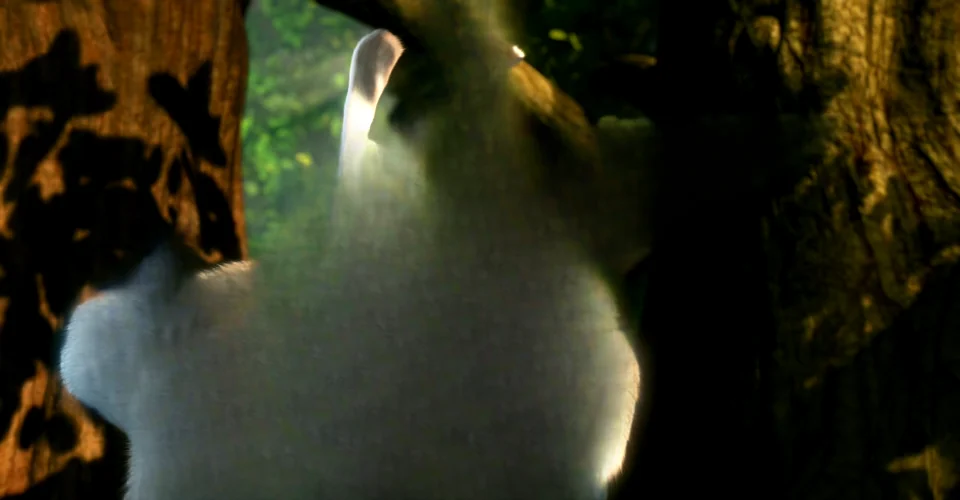

Films en series
Je hele collectie in 3D, op een bioscoopscherm helemaal voor jou.
Films, series, de reis van vorig jaar, de verjaardag in de familie, YouTube, je games. Pop3D maakt van alles op je computer echt 3D, direct in je VR-headset. Meteen, zonder iets om te zetten.

Gebruik onze Quest-app, de makkelijkste manier, of de pc-VR-app die je al gebruikt.
Open de app in je headset en hij vindt je computer vanzelf via je wifi thuis. Geen kabels, niets in te stellen.
Liever wat je al gebruikt? Pop3D werkt met de populairste manieren om een headset met een pc te verbinden.
Films zijn nog maar het begin. Reizen, familiemomenten, foto's, YouTube-video's en zelfs je favoriete game krijgen diepte.
Je hele collectie in 3D, op een bioscoopscherm helemaal voor jou.
Je pc-games in 3D in je headset, zonder mods.
Ga terug naar dat strand. Deze keer met diepte.
Verjaardagen, diploma-uitreikingen, de eerste stapjes van de baby.
Open een foto op je pc en stap erin.
Vlogs, documentaires, videoclips: alles wat op je computerscherm staat.
Landschappen met de diepte die ze echt hebben.
Sleep de lijn. Aan de ene kant het vertrouwde platte scherm. Aan de andere kant dezelfde scène met Pop3D. In je headset is het nog indrukwekkender: elk oog krijgt zijn eigen beeld.
Pop3D doet de magie op je computer en laat die zien in je headset. Installeer het eerst op je pc; de Quest-app is de makkelijkste manier om te kijken.
Downloaden, op Volgende klikken en klaar. Het stelt zich vanzelf in op je videokaart en houdt zichzelf daarna up-to-date.
Gratis downloaden voor WindowsAls je wilt, kun je het ook installeren via een USB-kabel:
Een computer met een NVIDIA RTX-videokaart en een VR-headset. Meer niet.
Ja. Geen advertenties, geen abonnement, geen addertje onder het gras.
Nee. Druk gewoon op play: de 3D ontstaat terwijl je kijkt.
Dat hoeft niet. De Pop3D-app voor Quest is de makkelijkste manier: hij is gratis in de Meta-store. Als je wilt, werkt Pop3D ook met Steam Link, Air Link, Virtual Desktop en SteamVR.
De Quest-app laat zien wat Pop3D op je computer klaarmaakt. Installeer ook Pop3D op je Windows-pc: met allebei open vindt de headset de computer vanzelf.
De eerste keer downloadt Pop3D ongeveer 4 GB: dat is de kunstmatige intelligentie die de magie maakt, en die wordt afgestemd op je videokaart. Hoe lang het duurt, hangt af van je internet. Daarna opent de app in een paar seconden en werkt hij zichzelf bij.
Het werkt met alles wat op je computerscherm verschijnt, zoals YouTube en de meeste websites. Sommige betaalde diensten beschermen hun video's tegen kopiëren en laten geen enkel programma het beeld opnemen. Video's op je computer werken meteen.
Voorlopig heeft de magie een NVIDIA RTX-videokaart nodig. Heeft je pc er geen, dan zegt het installatieprogramma dat meteen aan het begin, voordat er iets wordt gedownload.
Nooit. Alles gebeurt op je computer, en de video gaat via je thuisnetwerk rechtstreeks naar je headset. Pop3D stuurt alleen anonieme gebruiksstatistieken om steeds beter te worden, en je kunt dat uitzetten in Instellingen. Lees het privacybeleid.
Ja! Pop3D spreekt Nederlands: in de app op je computer, in de headset en in het installatieprogramma. Hij volgt de taal van Windows, en je kunt die wijzigen onder Instellingen › Taal van Pop3D.
Dat is de standaardwaarschuwing van Windows voor nieuwe programma's die Microsoft nog niet kent. Klik op Meer informatie en daarna op Toch uitvoeren.
Geweldig! In de app kun je het onder Ideeën en feedback direct naar ons sturen. Pop3D is gloednieuw en groeit samen met de mensen die het gebruiken.
Gratis. Installeert zichzelf. Werkt in je headset.